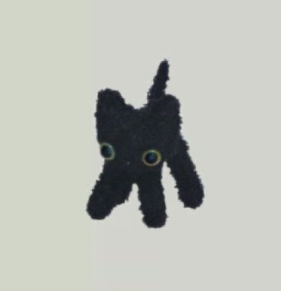

LET'S RANK STUFF
https://tiermaker.com/
INTERACTIVE FICTION GAMES
https://eblong.com/zarf/if.html

23 Questions I Ask Everybody I Meet
In Order To Decide If I Can Really Love Them
https://medium.com/the-orange-blog/chuck-klostermanns-23-questions-16b5d7148ab0
Personality characters drawing
Draaaawwinnngg
Cookbook Building XD
Let meh make a document hehehe